AnyPortrait > Manual > Non-interpolated Indexed Parameter
Non-interpolated Indexed Parameter
1.4.5
Among the control parameter types, the "Int" (integer) type has discontinuous values, unlike the "Float" type.
So Int control parameters are mainly used when switching the rendered meshes or images.
Although the Int type itself has discrete values, its uses are often for different purposes.
The images each mapped to the value of the control parameter may be in order, or vice versa.
"Eye-blinking sequences" or "Hand-folding sequences" are cases where images or meshes need to be switched in sequence.
Conversely, "Facial expression according to emotion" and "Attached accessories" would be the latter, which is far from "order".
In any case, "Int" control parameters usually work nicely.
But the latter, i.e. "Switching meshes which haven't order" causes problems with the animation's "Interpolation".
"Interpolation" is an arithmetic process where the values change gradually from A to B, and it is not appropriate to gradually change the value of a control parameter switching no-ordered meshes.
As the interpolation occurs in an animation playback or between keyframes, it is important whether control parameters temporarily have unintended intermediate values.
This page describes the issue and also describes the "Indexed" attribute added in v1.4.5 to address this issue.
About whether images are in order
Let's create and compare the two control parameters responsible for "meshes which are in order" and "meshes which aren't in order".
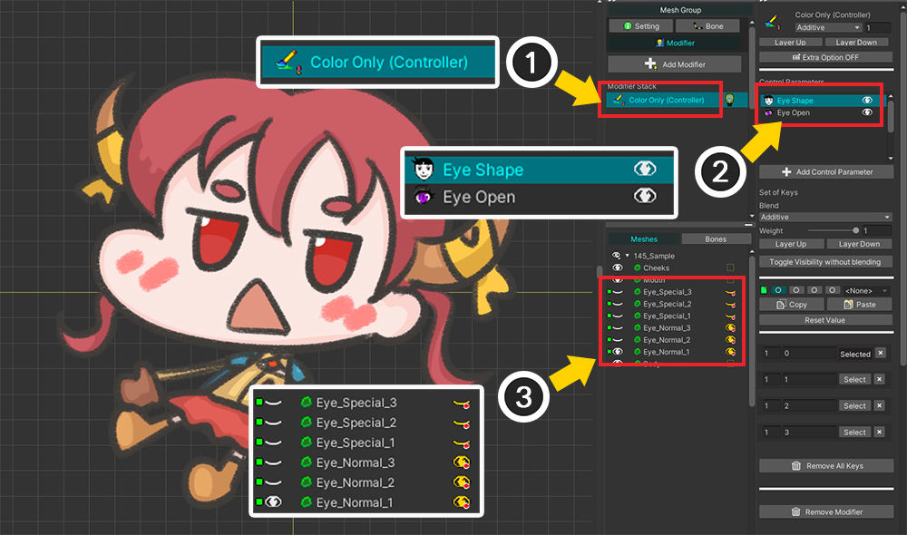
(1) This page uses the Color Only (Controller) modifier.
(Issues can occur in common with all modifiers that use control parameters.)
(2) We created two "Int" control parameters and registered them in the modifier.
- Eye Open : Switching 3 meshes that express the sequence of closing the eyes.
- Eye Shape : Switching 4 meshes expressing emotion.
(3) Each mesh is shown or hidden according to the control parameters.
Depending on the two control parameters, it is shown as follows.
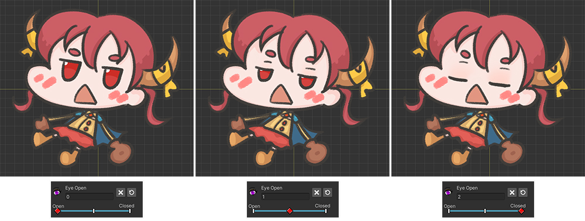
Adjusting the "Eye Open" parameter makes the character slowly close her eyes.
"Eyes open", "Eyes slightly closed", "Eyes closed" are expressed in order.
That means that meshes controlled by the "Eye Open" parameter "have order".
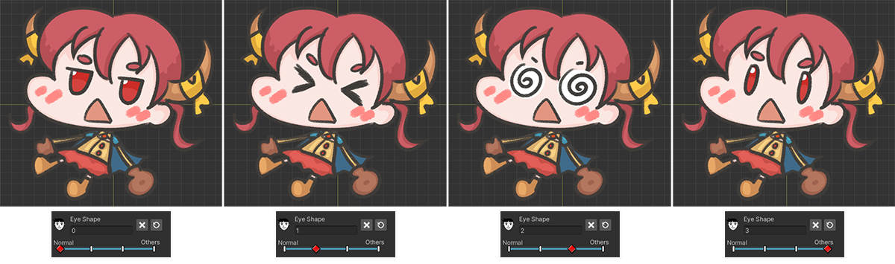
By adjusting the "Eye Shape" parameter, you can see facial expressions based on various emotions.
As shown in the picture above, the four expressions are simply mapped to their respective parameter values, and do "not have order".
"Eye Open" and "Eye Shape" are parameters of the same Int type, and control the visibility of meshes.
However, whether or not they are in order is different.
Recognizing these differences will help you understand the issues covered on this page.
Problems with controlling no-ordered images
The problem covered on this page is that when a control parameter of type Int converts images or meshes, those images have "no order".
It looks a bit complex, but the example shows that it's a more common problem than you might think.
Among the control parameters introduced in the previous example, "Eye Shape" corresponds to this case, so let's reproduce the problem with this control parameter.
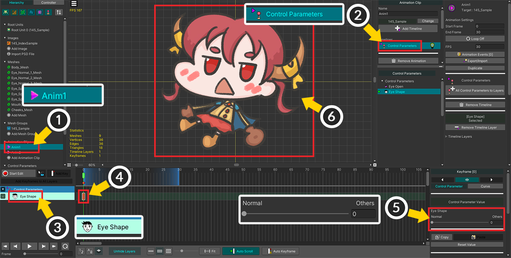
(1) We will create two animations. First, create the first animation, "Anim1".
(2) Add a Control Parameters timeline.
(3) Register "Eye Shape" to the timeline.
(4) Create a keyframe.
(5) In this animation, the value of the control parameter is set to "0".
The character's "Default face" is shown.
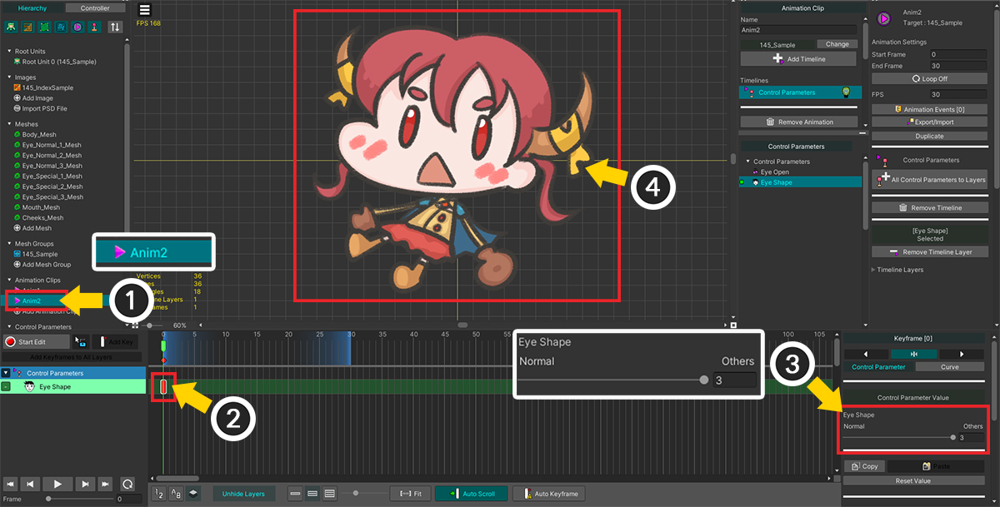
(1) We created a second similar animation. Set the name to "Anim2".
(2) Configure the timeline in the same way and add a keyframe.
(3) Let's set it to have a value of "3".
By changing the value of the parameter, the character's "Smart face" is shown.
Now, after Bake, let's play "Anim1" and "Anim2" in sequence in the Unity scene.
You can find the problem by using the CrossFade function to make the animation transition smoothly.
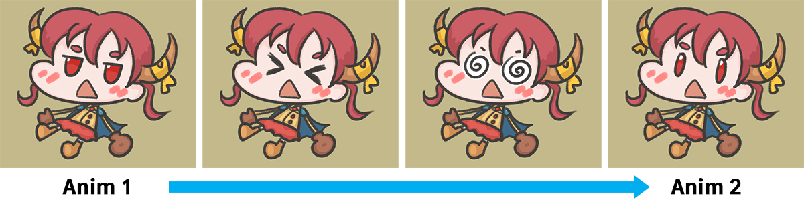
This is the result of an example where "Anim2" is played while "Anim1" is playing in the Unity scene.
In the middle of the smooth animation transition from "Anim1" to "Anim2", unintended facial expressions appear.
"Default face" should have switched to "Smart face" right away, but the "Surprised face" and "Dizzy face" appeared unintentionally.
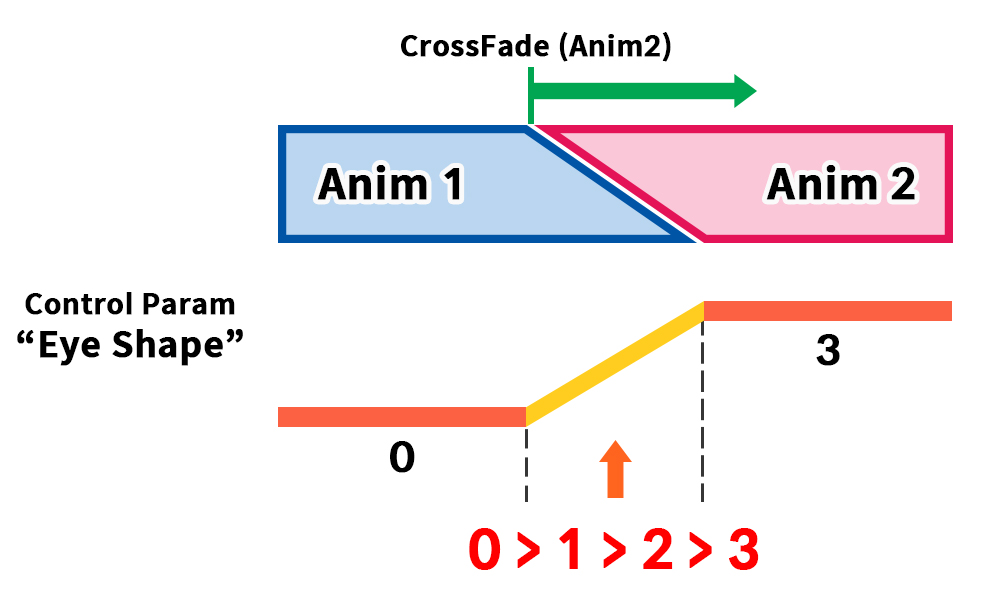
This issue is caused by "Interpolation" in animation transitions.
When an animation playback function such as CrossFade is executed, playback starts while gradually switching animations for a certain period of time.
In the picture above you can see that there is a short time transition from "Anim1" to "Anim2".
The value of the control parameter "Eye Shape" is "0" in "Anim1", and changes to "3" when "Anim2" is played.
At this time, during the short time during which the animation is switched, values between "0" and "3" are interpolated.
During the interpolation process, the value is changed as "0" > "1" > "2" > "3" sequentially, which is the cause of the problem.
This interpolation process itself is not a bug.
This is because intermediate poses between motions and intermediate values of control parameters of type "Float" or "Vector" must be interpolated for smooth animation transition effects.
However, especially in the case of "Int type control parameter that switches no-ordered images", this interpolation process produces rather incorrect results.
To solve this problem, you need to specify "non-interpolated" in the control parameter.
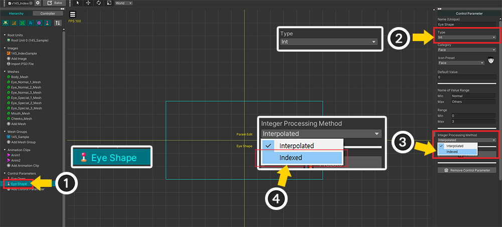
(1) Select the "Eye Shape" control parameter.
(2) Confirm that it is set as Int type.
(3) In case of Int type, Integer Processing Method option appears. This option can take one of the values Interpolated and Indexed.
(4) Choose Indexed.
Now let's bake and test the same in the Unity scene.
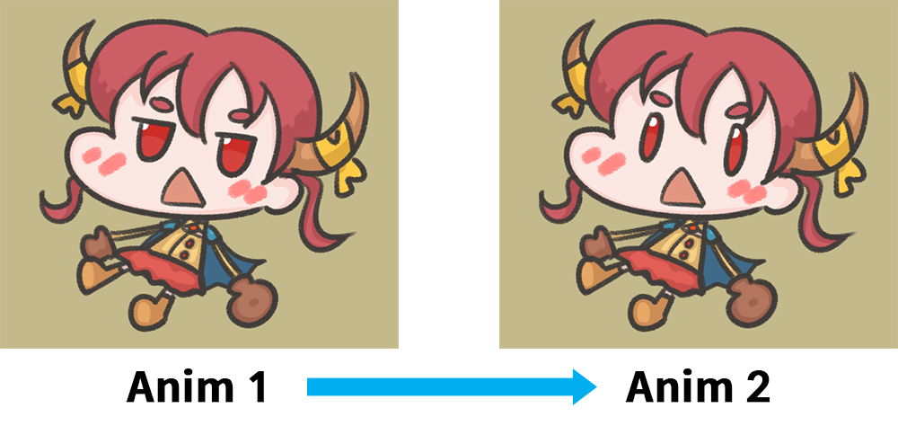
When switching from "Anim1" to "Anim2", facial expressions by intermediate values of control parameters do not appear.
Thanks to this, only you can see a direct transition from "Default face" to "Smart face" as intended.
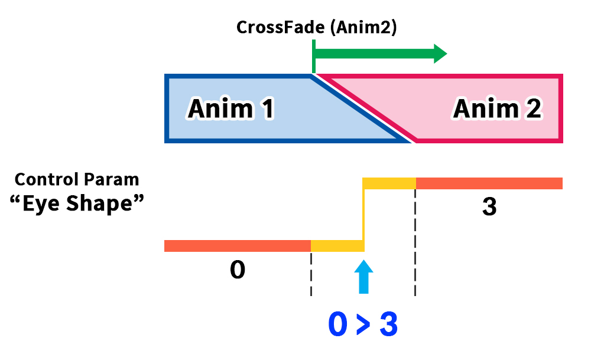
If you set the value of the Integer Processing Method property to Indexed in the control parameter, the above calculation is performed during animation interpolation.
The bug is solved because the transition from "Anim1" to "Anim2" skips all intermediate values, and only immediately transitions from "start value (0)" to "end value (3)".
Comparing during interpolation between keyframes
This phenomenon can be seen not only in animation transitions but also in interpolation between keyframes.
Let's see how different results are displayed using the two control parameters.

Let's set the two control parameters described above differently.
For "Eye Open" where images are switched in sequence, set the value of Integer Processing Method to Interpolated (default).
For "Eye Shape" where there is no order among images, set to Indexed as described above.
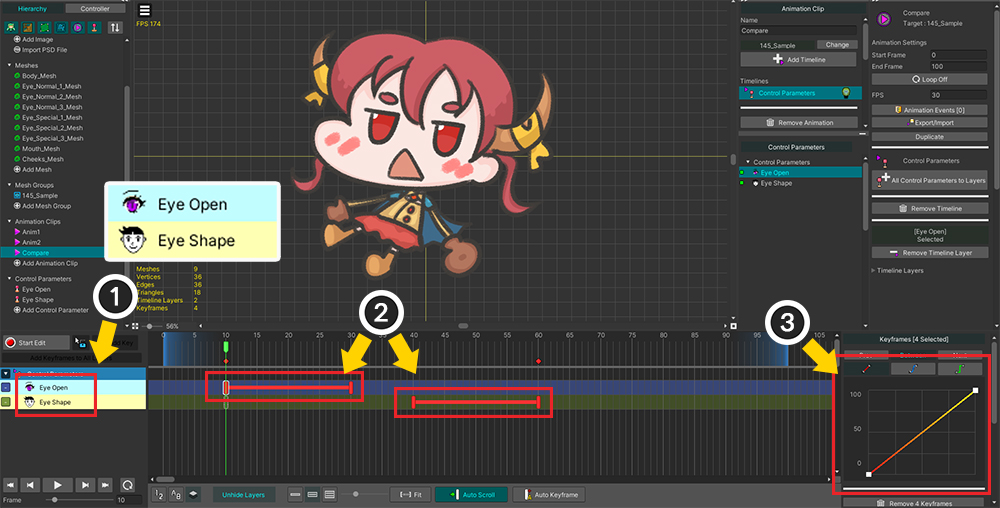
Let's set up an animation for comparison.
(1) Add all control parameters to the timeline.
(2) Keyframes have been added as above so that you can see the interpolation process between keyframes.
We entered the minimum value of each control parameter in the preceding keyframe and the maximum value in the following keyframe.
(3) Change the Animation curve to Linear.
For Int-type control parameters, the Constant curve is set by default.
This is because interpolation can be suppressed, but here we need to check the interpolation process, so let's change it to Linear.
(For animation curves, check the related page.)
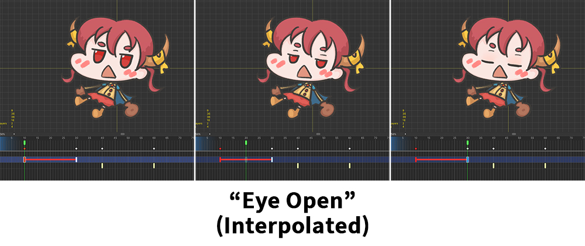
For "Eye Open" set to Interpolated, you can see the value of the control parameter gradually change "0 > 1 > 2" between keyframes.
That is, interpolation has been applied, and the result is very natural because the images were drawn in such a way that they are displayed in order.
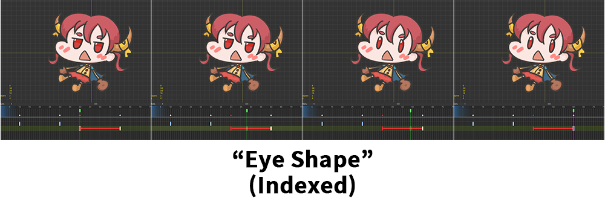
For "Eye Shape" set to Indexed, control parameters do not have intermediate values during keyframe interpolation.
Only transitions directly from the state at the previous keyframe to the state at the next keyframe, which is very suitable for transitioning images that do not have a sequence.
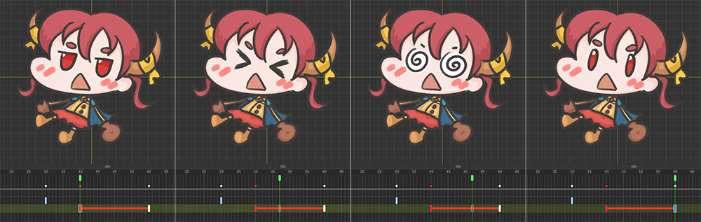
If it is not set to Indexed, the meshes corresponding to the intermediate values will be shown during the keyframe interpolation process as above.
In other words, it can be seen that problems in interpolation can be avoided by appropriately determining the properties according to whether the images have an order.